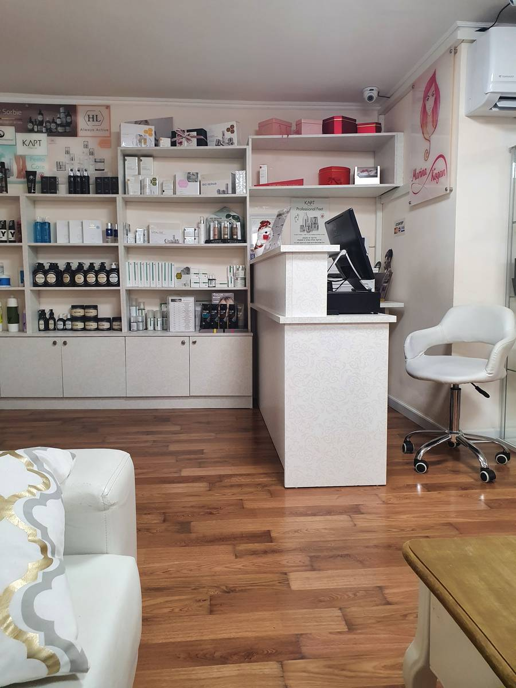
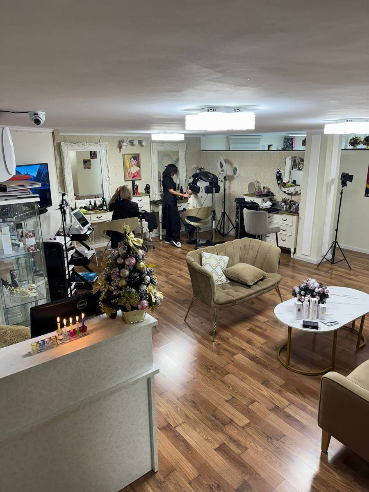
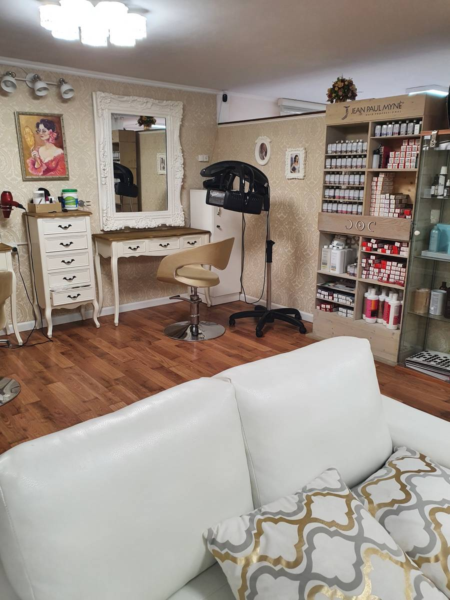
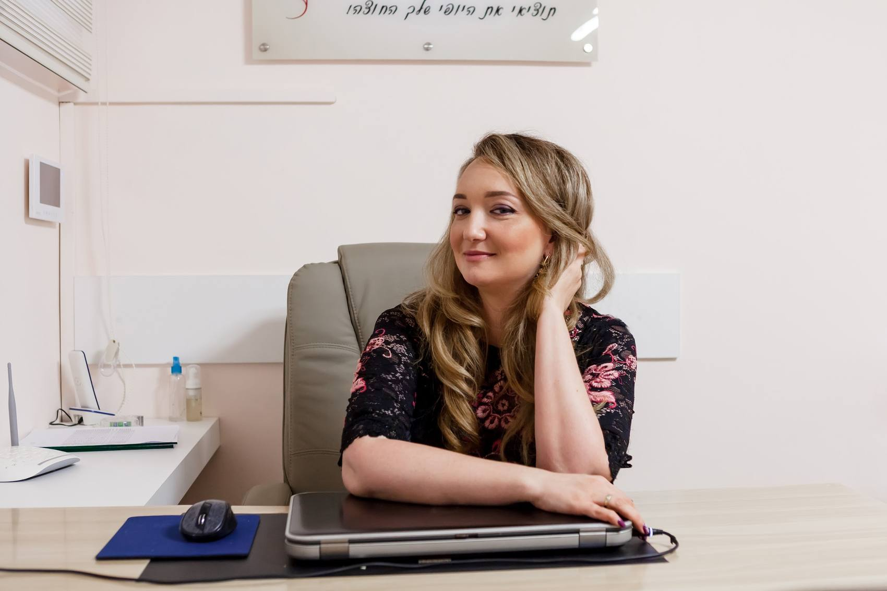
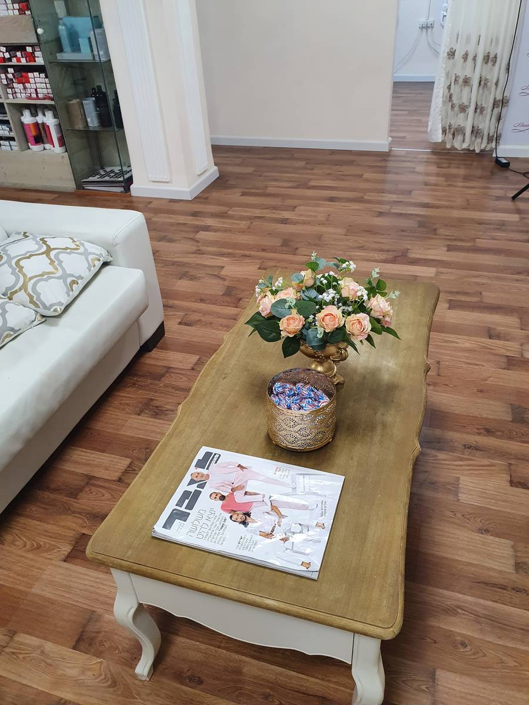
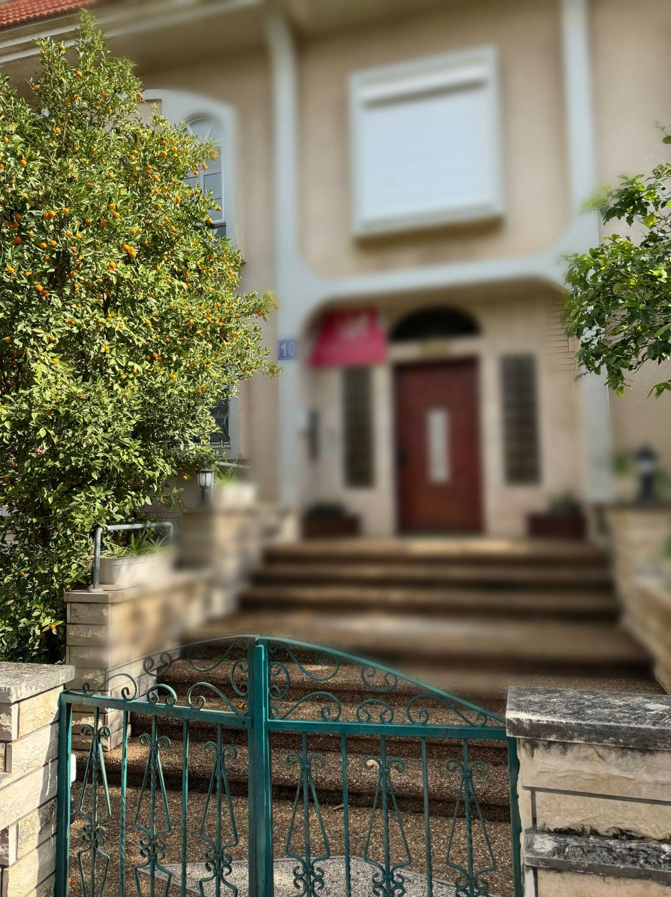

הלחמת ריסים.Lash extensions.
וגם הרמת ריסים. התמונות מהאתר של מרינה.And lash lifts. Photos from Marina’s own website.
במכון גם גבות, איפור קבוע, טיפולי פנים, ציפורניים ושיער.The salon also does brows, permanent makeup, facials, nails and hair.
המכון, מבפנים.The salon, inside.
דלפק קבלה, מדף מוצרים, ספה, מראה לבנה והשולחן של מרינה.A reception desk, a wall of products, a sofa, a white mirror and Marina’s desk.

הקבלהReception
הסלוןThe salon
המראהThe mirror
השולחן של מרינהMarina’s desk

4.8 בגוגל.4.8 on Google.
״עבודה מקצועית, נעימה, נקייה, ממליצה בחום לכל מי שמחפשת ריסים שמחזיקים ובנות ששואלות איפה עשית?! כי זה מושלם.״“Professional, pleasant, clean work. I warmly recommend it to anyone looking for lashes that last, and girls who ask where you had them done?! Because it’s perfect.”
״הבת שלי הגיעה עבור טיפול הלחמת ריסים […] האפקט של הריסים מהמם!! […] מומלץ בחום רב גם טיפול הרמת ריסים שאני עשיתי.״“My daughter came for lash extensions […] the effect of the lashes is stunning!! […] I also highly recommend the lash lift I had.”
״שירות נעים, נקי, תוצאה יפה ונקייה וכמו שרציתי. קל לקבוע תור.״“Pleasant, clean service, a beautiful, neat result, just as I wanted. Easy to book.”
לקבוע תור.Book a visit.
בחרו טיפול ויום, וההודעה תישלח למרינה בוואטסאפ.Choose a treatment and a day, and the message goes to Marina on WhatsApp.

חניתה 10.10 Hanita Street.
חניתה 10, קריית ביאליק10 Hanita St, Kiryat Bialik